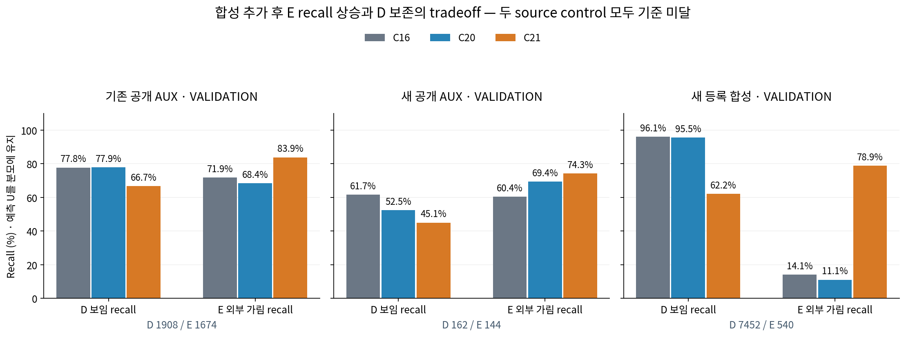
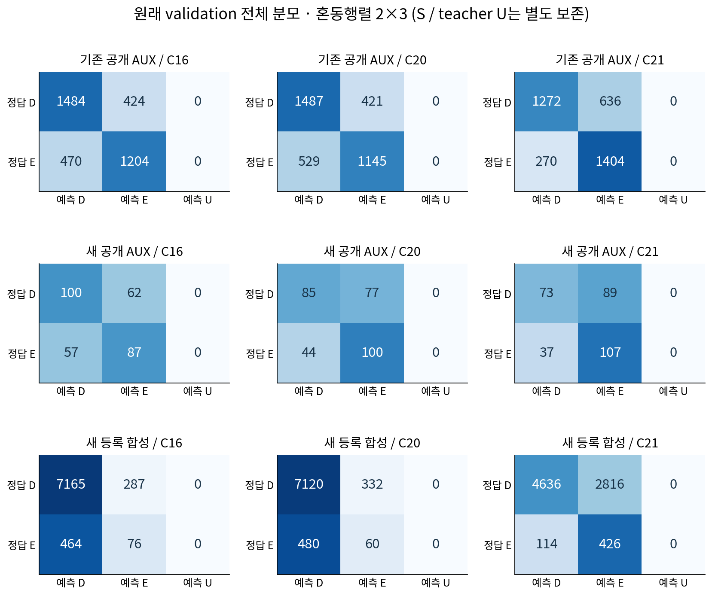

C21은 새 등록 합성 validation에서 E recall을 14.1% → 78.9%로 높였지만 D recall은 96.1% → 62.2%로 떨어졌습니다. 새 공개 AUX validation도 D 45.1%, E 74.3%로 기준 미달입니다. C20·C21 모두 source 부적격이며 새 current 평가는 허용되지 않았습니다. 목표가 해결됐거나 실제 실사 성능이 개선됐다는 결과가 아닙니다.
비교 정의 C16은 기존 source-selected step4500의 고정 기준 모델입니다. C20은 기존 공개 source 795개 + 새 공개 TRAIN 612개를 재학습했고, C21은 동일한 public 추출 순서에 등록 합성의 D/E 균형 batch를 추가했습니다. 두 arm 모두 같은 C16에서 시작해 동일 lr의 1,000회 고정 update를 실행했습니다. backbone·1928 feature·head 구조·raw threshold 0은 유지했고 validation checkpoint 선택은 없었습니다. 두 학습이 끝난 뒤 validation 수치를 산출했습니다.

CM의 행은 실제 D/E, 열은 예측 D/E/U입니다. recall은 known D/E 전체를 분모로 하며 예측 U를 포함합니다. 이 세 validation의 known input U는 모두 0입니다. teacher U는 예측 U와 다른 개념입니다.
| cohort | 모델 | CM [[D→D,D→E,D→U],[E→D,E→E,E→U]] | D precision | D recall | E precision | E recall | 예측 U / known |
|---|---|---|---|---|---|---|---|
| 기존 공개 AUX | C16 | [[1484, 424, 0], [470, 1204, 0]] | 75.9% | 77.8% | 74.0% | 71.9% | 0/3582 |
| 기존 공개 AUX | C20 | [[1487, 421, 0], [529, 1145, 0]] | 73.8% | 77.9% | 73.1% | 68.4% | 0/3582 |
| 기존 공개 AUX | C21 | [[1272, 636, 0], [270, 1404, 0]] | 82.5% | 66.7% | 68.8% | 83.9% | 0/3582 |
| 새 공개 AUX | C16 | [[100, 62, 0], [57, 87, 0]] | 63.7% | 61.7% | 58.4% | 60.4% | 0/306 |
| 새 공개 AUX | C20 | [[85, 77, 0], [44, 100, 0]] | 65.9% | 52.5% | 56.5% | 69.4% | 0/306 |
| 새 공개 AUX | C21 | [[73, 89, 0], [37, 107, 0]] | 66.4% | 45.1% | 54.6% | 74.3% | 0/306 |
| 새 등록 합성 | C16 | [[7165, 287, 0], [464, 76, 0]] | 93.9% | 96.1% | 20.9% | 14.1% | 0/7992 |
| 새 등록 합성 | C20 | [[7120, 332, 0], [480, 60, 0]] | 93.7% | 95.5% | 15.3% | 11.1% | 0/7992 |
| 새 등록 합성 | C21 | [[4636, 2816, 0], [114, 426, 0]] | 97.6% | 62.2% | 13.1% | 78.9% | 0/7992 |

| arm | 통과 | 실패한 prospective source 조건 |
|---|---|---|
| C20 | 4/8 | old_public_E, PUBLIC_AUX_VAL_D, PUBLIC_AUX_VAL_E, NATIVE_VAL_E |
| C21 | 2/8 | old_public_D, old_SHAMin_plus1, PUBLIC_AUX_VAL_D, PUBLIC_AUX_VAL_E, NATIVE_VAL_D, NATIVE_VAL_E |
C20 public 재학습만으로는 합성 E recall이 11.1%에 머물렀습니다. C21의 합성 추가는 그 값을 크게 높였으나 합성 D 누락도 287개에서 2,816개로 늘었습니다. 기존 공개 validation에서도 C21은 E recall 71.9%→83.9%와 함께 D recall 77.8%→66.7%의 tradeoff를 보였습니다. 따라서 이번 제어 실험은 source 데이터가 판정에 영향을 준다는 증거이지만, D/E를 안정적으로 구분하는 균형 해법이나 실사 전이 성공의 증거는 아닙니다.
| validation cohort | 전체 행 | D | E | S | teacher U |
|---|---|---|---|---|---|
| 기존 공개 AUX | 3978 | 1908 | 1674 | 0 | 396 |
| 새 공개 AUX | 306 | 162 | 144 | 0 | 0 |
| 새 등록 합성 | 18432 | 7452 | 540 | 2880 | 7560 |
등록 합성 teacher는 지정 모서리 인접 영역의 연속 ray witness에 대한 보임/외부 가림입니다. q 픽셀에 target 물질이 있는가와 같지 않습니다. 그 차이와 q-pixel owner 진단, C16/v61의 각자 전체·공통 availability 분모는 완료된 baseline 비교에 따로 남겼습니다. 공개 AUX는 weak cue region과 보호 영역을 가리는 합성 조건이며 human/native exact gold로 승격하지 않습니다. S는 기하 경로로 별도 처리하며 외부 E 학습 대상이 아닙니다. S/U 행은 버리지 않고 JSON의 typed counts에 보존했습니다.
Native corpus는 192개 base 설정·768개 장면에서 9개 상관된 q8 조건과 8개 slot을 만든 자료입니다. PUBLIC_AUX는 6개 cue 중 TRAIN 4개·validation 2개이며 원래 take group은 총 5개(TRAIN 3개·validation 2개)입니다. 같은 take의 두 TRAIN cue와 각 cue의 query·donor 반복은 독립 새 실사 표본이 아닙니다. 기존 공개 source도 반복 개발에 노출됐습니다. 합성 wood/polymer 재질과 rectangular/square 형상은 독립 교차 축이며 실제 WOOD/SQUARE 평가군과 다릅니다.
이번 보고서는 source 저장 JSON만 읽었습니다. 새 encoder/head forward·fit·현재223/V112 접근·좌표 보정·PnP가 없습니다. V124의 실제 current 결과는 갱신되지 않았고 전체 목표는 미해결입니다. 아래 원본 저장 결과와 보고서 수치는 선택·임계값 재조정에 사용하지 않았습니다.